This is a draft (July 29, 2005) of Part VIII of The Emotion Machine by Marvin Minsky. Send comments to minsky@media.mit.edu.
§8‑1. Resourcefulness.................................................................................................................................................. 1
§8‑2. Estimating Distances........................................................................................................................................... 3
§8‑3. Panalogy............................................................................................................................................................. 5
§8‑4. How does Human Learning work?................................................................................................................... 10
How do we Learn so Rapidly?................................................................................................................................ 11
Learning by building “Knowledge-Lines”.............................................................................................................. 13
§8‑5. Credit-Assignment............................................................................................................................................. 14
§8‑6. Creativity and Genius........................................................................................................................................ 17
§8‑7. Memories and Representations......................................................................................................................... 19
Multiple Ways to Represent Knowledge................................................................................................................. 21
A Hierarchy of Representations.................................................................................................................................. 27
∞∞∞∞∞∞∞∞∞∞∞∞∞∞∞∞∞∞∞
“Although machines can perform certain things as well as or perhaps better than any of us, they infallibly fall short in others, from which we may discover that they did not act from knowledge, but only from the arrangements of their parts.” —Descartes, in Discourse on Method, 1637.
We are all accustomed to using machines that are stronger and faster than people are. But before the first computers appeared, no one could see how any machine could do more than a very few different things. This must be why Descartes insisted that no machine could be as resourceful as any person can be.
“For while reason is a universal instrument which can apply to every situation, a machine’s parts need a particular arrangement for each particular action; therefore it is impossible for a single machine to have enough diversity to enable it to act in all the events of life in the same way as our reason causes us to act.”[1]
Similarly in earlier times there appeared to be an unbridgeable gap between the capacities of humans and other animals. Thus, in The Descent of Man, Darwin observes that,” Many authors have insisted that man is divided by an insuperable barrier from all the lower animals in his mental faculties.” However, he then contends that this difference may be just “one of degree and not of kind.”
Charles Darwin: “It has, I think, now been shewn that man and the higher animals, especially the primates … all have the same senses, intuitions, and sensations, — similar passions, affections, and emotions, even the more complex ones, such as jealousy, suspicion, emulation, gratitude, and magnanimity; … they possess the same faculties of imitation, attention, deliberation, choice, memory, imagination, the association of ideas, and reason, though in very different degrees.” [2]
Then Darwin observes that “the individuals of each species may graduate in intellect from absolute imbecility to high excellence,” and argues that even the highest forms of human thought could have developed from such variations—because he sees no particular point at which that would meet an intractable obstacle.
“That such evolution is at least possible, ought not to be denied, for we daily see these faculties developing in every infant; and we may trace a perfect gradation from the mind of an utter idiot ... to the mind of a Newton.”
Many people still find it hard to envision how there could have been transitional steps from animal to human minds. In the past, that view was excusable—because few thinkers had ever suspected that only a few small structural changes could vastly increase what machines can achieve. However, in 1936, the mathematician Alan Turing showed how to make a “universal” machine that can read the descriptions of other machines—and then, by switching among those descriptions, it can do all the things that those machines can do. [3]
All modern computers use this trick, so today we can use the same machine to arrange our appointments, edit our texts, or help us send messages to our friends. Furthermore, once we store those descriptions inside the machine, then those programs can change themselves—so that the machine can keep extending its own abilities. This showed that the limits which Descartes observed were not inherent in machines, but resulted from our old-fashioned ways to build or to program them. For each machine that we built in the past had only way to accomplish each particular task—whereas each person, when stuck, has alternatives.
Nevertheless, many thinkers still maintain that machines can never achieve such feats as composing great theories or symphonies. Instead, they prefer to attribute such feats to inexplicable ‘talents’ or ‘gifts.’ However, those abilities will seem less mysterious, once we see how our resourcefulness could result from having such diverse ways to think. Indeed, each previous chapter of this book discussed some way in which our minds provide such alternatives:
§1.
We are born with many kinds of resources.
§2. We learn from our Imprimers and friends.
§3. We also learn what we ought not to do.
§4. We can reflect upon what we are thinking about.
§5. We can predict the effects of imagined actions.
§6. We use huge stores of commonsense knowledge.
§7. We can switch among different Ways to Think.
This chapter discusses yet additional features that make human minds so versatile.
§8‑2. We can see things from many points of view.
§8‑3. We have special ways to rapidly switch among these.
§8‑4. We have developed special ways to learn very quickly. Move the
§8‑5. We have efficient ways to recognize which knowledge is relevant.
§8‑6. We can keep extending the range of our ways to think.
§8‑7. We have many different ways to represent things.
At the start of this book, we noted that it is hard to conceive of ourselves as machines, because no machine that we’ve seen in the past seemed to understand the meanings of things, but could only react to the simple commands that we designed them to execute. Some philosophers argue that this must be because machines are merely material things, whereas meanings exist in the world of ideas, which lies outside the realm of physical things. However, Chapter §1 suggested that we, ourselves have constrained our machines by defining those meanings so narrowly that we fail to express their diversity:
If you 'understand' something in only one way then you scarcely understand it at all—because when something goes wrong, you'll have no place to go. But if you represent something in several ways, then when one method fails, you can switch to another. That way, you can turn things around in your mind to see them from different points of view —until you find one that works for you!
To show how this kind of diversity makes human thinking so versatile, we’ll start with examples of the multiple ways we use to estimate our distance from things.
∞∞∞∞∞∞∞∞∞∞∞∞∞∞∞∞∞∞∞
Why
has not man a microscopic eye?
For this plain reason, man is not a fly.
Say what the use, were finer optics giv'n,
T' inspect a mite, not comprehend the heav'n? —Alexander Pope (in Essay on Man)
When you’re thirsty, you look for something to drink—and if you notice a nearby cup, you can simply reach out to pick it up—but if that cup lies further away, then you will have to move over to it. But how do you know which things you can reach? A naïve person sees this as no problem at all because, “You just look at a thing and you see where it is.” But when Joan detected that oncoming car in §4-2 or grasped that book in §6-1, how did she know its distance from her?
In primeval times we had to guess how near our predators were to us; today we only need to judge if we have enough time to cross the street—but, still, our lives depend on this. Fortunately, we each have many different ways to estimate the distance to things.
For example, you know that a typical cup is about as large as your hand. So if a cup fills as much of the scene as does your outstretched hand , then you can reach it from where you stand. Similarly, you can judge how far you are from a typical chair, because you know its approximate size.
However, even when you don’t know an object’s size, you still have ways to estimate its distance from you. For example, if you can assume that two things are of similar size, then the one that looks smaller is further away. Of course, that assumption may be wrong, if one of those objects is a small model or toy. And also, whenever two objects overlap, then the one in front must be closer to you, regardless of its apparent size.
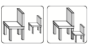
You can also get spatial information from how the parts of a surface are lighted or shaded, and from an object’s perspective and context. Again, such clues are sometimes misleading; the images of the two blocks below are identical, but the context suggests that they have different sizes.
If you assume that two objects lie on the same level surface, then the one that looks higher lies further away. Also, finer-grained textures look further away, and so do things that look hazier.
You can also judge a distance to an object by difference in its images in your two eyes—either by the angles between those two images or by the small ‘stereoscopic’ disparities between those slightly different images.
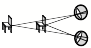
Also, if an object is moving, then the closer it is to you, the faster it will appear to move. You also can estimate its range by how you must change the focus of the lens of your eye.
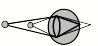
Finally, aside from all these perceptual schemes, one frequently knows where some object is, without using any vision at all—because, if you’ve seen a thing in the recent past, its location is still in your memory!
Student: Why would we need so many different methods, when surely just two or three would suffice?
In almost every waking minute, we make hundreds of judgments of distance, and yet we scarcely ever fall down the stairs, or accidentally walk into doors. Yet each of our separate ways to estimate distance has many different ways to fail. Focusing works only on nearby things—and many persons can’t focus at all. Binocular vision works over a longer range, but quite a few people are unable to compare the images in their two eyes. Some methods fail when the ground isn’t level, and texture and haze are not often available. Knowledge only applies to objects you know, and an object might have an unusual size—yet we scarcely ever make fatal mistakes because we can use so many different techniques.
But if every method has virtues and faults, how do we know which ones to trust? The next few sections will discuss some ideas about how we manage to so quickly switch among so many different ways to think.
∞∞∞∞∞∞∞∞∞∞∞∞∞∞∞∞∞∞∞
The previous section emphasized how many different techniques we could use to accomplish the same objectives — mainly to know how far away some Object is. However, it would not help us very much to have so many methods available, unless we also had some way to switch among them almost effortlessly. This section will suggest a particular kind of machinery that, I suspect, our brains might use to do such switching almost instantly.
In Chapter 6 we mentioned that when you read the sentence, “Charles gave Joan the Book,” this can cause you to interpret ‘book’ in several different realms of thought: as an object, possession, or storehouse of knowledge.
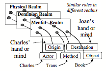
However, having multiple representations won’t help you much unless you use the context to rapidly switch to the appropriate meaning.
Student: Why would you actually need to switch? Why can’t you maintain all those meanings at once?
There are always limits to how many things a person can do simultaneously. You can touch, hear, and see things concurrently because those processes use different parts of the brain. But few of us can draw two different things with both hands, simultaneously—presumably, because these compete for resources that can do only one of those things at a time. This section will suggest how our brains could quickly switch between different meanings. [4]
Whenever you walk into a room, you expect to see the opposite walls, but you know that you will no longer see the door through which you entered that room.
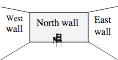
Now walk to the West wall that is now to your left, and turn yourself to face to the right; then you will be facing toward the East.
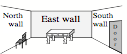
The South wall has now come into view, and the West wall now is in back of you. Yet although it now is out of sight, you have no doubt that it still exists. What keeps you from believing that the South wall just now began to exist, or that the West wall has actually vanished? This must be because you assumed all along that you are in a typical, box-like room. So, of course you knew just what to expect: all four sides of that room will still exist.
Now consider that each time you move to another place, every object you that you have seen may now project a different shape on the retinas in the back of your eyes—and yet those objects do not seem have changed? For example, although the visual shape of that North wall has changed , you still see it as rectangular. What makes those meanings remain the same? [5] Similarly, you now see an image of that chair in which it appears to have turned around —but you usually don’t even notice this, because your brain knows that it is you who has moved and not the chair. Also, you now can see the door that you entered through—yet none of this surprises you!
What if you next turn right to face the South? Then the North wall and chair will disappear, and the West wall will re-enter the scene—just as anyone would expect.
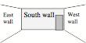
You are constantly making these kinds of predictions without any sense of how your brain keeps dealing with that flood of changing appearances: How do you know which things still exist? Which of them have actually altered their shapes? Which of them have actually moved? How do you know you’re still in the same room?
Student: Perhaps those questions do not arise because we’re seeing those objects continuously. If they suddenly changed we’d notice this.
In fact, our eyes are always darting around, so our vision is far from continuous. [6] All this evidence seems to suggest that, even before you entered that room, you have already, somehow, assumed a good deal of what you were likely to see.
“The secret is that sight is intertwined with memory. When face to face with someone you newly meet, you seem to react almost instantly—but not as much to what you see as to what that sight “reminds” you of. The moment you sense the presence of a person, a world of assumptions are aroused that are usually true about people in general. At the same time, certain superficial cues remind you of particular people you've already met. Unconsciously, then, you will assume that this stranger must also resemble them, not only in appearance but in other traits as well. No amount of self- discipline can keep those superficial similarities from provoking assumptions that may then affect your judgments and decisions.”— Section §24‑1 of SoM.
What would happen if every time you moved, you had to re-recognize every object in sight? You would have to re-guess what each object is, and get evidence to support that conjecture. If so, then your vision would be so unbearably slow that you would be virtually paralyzed! But clearly, this is not the case, because:
“When we enter a room, we seem to see the entire scene almost instantly. But, really, it takes time to see—to apprehend all the details and see if they confirm our expectations and beliefs. Our first impressions often have to be revised. Still, how could so many visual cues so quickly lead to consistent views? What could explain the blinding speed of sight?”[7]
Answer: we don’t need to constantly ‘see’ all those things because we build virtual worlds in our heads. Hear one of my favorite neurobiologists:
William H. Calvin: “The seemingly stable scene you normally “see'' is really a mental model that you construct—the eyes are actually darting all around, producing a retinal image as jerky as an amateur video, and some of what you thought you saw was instead filled in from memory.” [8]
We construct those mental models so fluently that we feel no need to ask ourselves how our brains make them and put them to use. However, here we need a theory about why, when we move, the objects around us seem to remain in place. When first you see the three walls of that room, you might have represented them with a network like this:
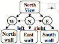
However, even before you entered that room, you expected it to have four walls—and already knew how to represent a ‘typical box-like four-walled room.’ Consequently, you ‘assumed by default’ that its edges, corners, ceiling, and floor would be parts of a larger, non-moving framework that doesn’t depend on your present point of view. In other words, the ‘reality’ that we perceive is based on mental models in which things don’t usually change their shapes or disappear, despite their changing appearances. We mainly react to what we expect—and tend to represent what we see as ‘things’ that remain in their places. [9]
If you use this kind of larger-scale structure, then as you roam about that room, you can store each new observation in some part of that more stable framework. For example, if you represent that chair as near the North wall, and the door as part of the South wall, then these objects will have a fixed ‘mental place’—regardless of where you were when you noticed them—and those locations will stay the same even when those objects are out of sight. (Of course this could lead to accidents, if an object was moved without your knowing it!
For vision, this shows how the space that surrounds us would seem to stay the same when we see it from different views—by linking features in different realms to similar roles in a larger-scale frame. For language, in §6-1 we saw how this method could make “Charles gave Joan the Book” seem to keep a single meaning when we interpret it in different realms. We introduced the term “Panalogy” to describe such schemes for linking analogous features together.
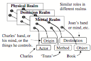
Student: How do we make new panalogies? How hard are they to build and maintain? Is the talent for making them innate or learned? Where do we place them in our brains? And what happens when one of them makes a mistake?
We rarely make an entirely new idea, because, before you make records of anything new, you are likely already to have recalled some similar object or incident—so then, we will usually copy and modify some structure that we already have. This is extremely useful because, otherwise, we would have no way to get access to that ‘new idea,’ or know which old skills to apply to it. Also, if that older concept already belongs to a panalogy, we can add the new idea as an additional leaf; then it will inherit the techniques by which that older is retrieved and applied.
For example, you can think of a chair as a physical structure whose parts consist of a back, seat and legs. In that physical view, the chair’s legs support its seat, and both of these support the chair’s back.
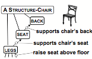
However, you can also think of a chair as a way to make people feel comfortable. Thus the chair’s seat is designed to support one’s weight, the chair’s back serves to support one’s back, and the chair’s legs support one up to a height designed to help a person to relax.
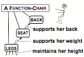
Similarly, you could also regard that very same chair as an item of personal property, or as a work of art or of carpentry—and each of those various contexts or realms could lead you to represent chairs in different ways. Then, when your present way to think fails, your critics could tell you to switch to another.
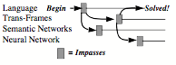
However, that switching might cost you a good deal of time—if you were forced to start over. But, if you have grouped those several representations into a panalogy, by linking their similar features together, then you’ll be able more quickly to switch. Indeed, I suspect that much of what we know has been organized into panalogies—so that we can see an automobile as a vehicle, or as a complex mechanical object, or as a valuable possession. We can see a city as a place for people to live, as a network of social services, or as an object that requires a lot of water, food, and energy. Chapter §9 will argue that, whenever you think about your Self, you are reflecting about a panalogy of mental models of yourself.
From where do our panalogies come, and how and when do we develop them? I suspect that the architecture of our brains has evolved so that we tend to link every fragment of knowledge we learn to similar ones that we already know, in analogous aspects of multiple realms—and that we do this so automatically that it seems to require no reasoning. [10]
Student: But wouldn’t that make you mistake whatever you see for something else that it reminds you of? You would always be confusing things.
Yes, and we’re constantly making those kinds of ‘mistakes’—but although this may seem paradoxical, that actually helps to keep us from being confused! For if you saw each object as totally new, then it would have no meaning to you—and you would have no ideas about what to do. However, if each new item gets linked to some older ones—as when a new chair reminds you of previous ones—then you will know some things you could do with it.
If our memories mainly consist of panalogies, then most of our thinking will have to deal with ambiguous representations of things. However, this is a virtue and not a fault because much of our human resourcefulness comes from using analogies.
∞∞∞∞∞∞∞∞∞∞∞∞∞∞∞∞∞∞∞
The word ‘learning’ is useful in everyday life—but when we look closely we see that it includes many ways that our brains can change themselves. To understand how our minds grow, we would need ideas about how people learn such different skills as how to build a tower or tie a shoe, or to understand what a new word means, or how a person can learn to guess what their friends are thinking about. If we tried to describe all the ways in which we learn, we’d find ourselves starting a very long list that includes such methods as these:
Learning by adding new If-Do-Then rules, or by
changing low-level connections,
Learning by making new subgoals for goals, or finding better search techniques,
Learning by changing or adding descriptions, statements and narrative stories.
Learning by changing existing processes.
Learning to prevent mistakes by making Suppressors and Censors.
Learning to make better generalizations.
Learning new Selectors and Critics that provideus with new Ways to Think,
Learning new links among our fragments of knowledge.
Learning to make new kinds of analogies.
Learning to make new models, virtual worlds, and other types of
representations.
As our children develop, they not only learn particular things, but they also acquire new thinking techniques. However, there is no evidence that, by itself, an infant could ever invent enough such things. So, perhaps the most important human skill is to learn, not only from one’s own experience, but also to learn from being told things by others. However, long ago, the philosopher Hume raised a yet more fundamental question, namely of why learning is possible at all:
David Hume: “All inferences from experience suppose, as their foundation, that the future will resemble the past, and that similar powers will be conjoined with similar sensible qualities. If there be any suspicion that the course of nature may change, and that the past may be no rule for the future, all experience becomes useless, and can give rise to no inference or conclusion.”[11]
In other words, learning itself can only work in a suitably uniform universe. But still we need to ask how learning works. In particular, the following section will ask how a person can learn so much from seeing a single example. [12]
∞∞∞∞∞∞∞∞∞∞∞∞∞∞∞∞∞∞∞
No other creatures come close to us in being able to learn so much—and we do this with astonishing speed, as compared to other animals. Here’s an example that illustrates this:
Jack saw a dog do a certain trick, so he tried to teach it to his own pet, but Jack’s dog needed hundreds of lessons to learn it. Yet Jack learned that trick from seeing it only once. How did Jack so quickly learn so much—although he has only only seen one instance of it?
People sometimes need long sessions of practice, but we need to explain those occasions in which we learn so much from a single experience. However, here is a theory which suggests that Jack does indeed need many repetitions—but he does them by using an ‘animal trainer’ inside his head, which he uses to train other resources inside his brain, in much the same ways that he would use to teach his pet!
To do this, Jack could use a process like the Difference-Engine in §6-3. It begins with a description D of that trick, which is now in his ‘short-term memory.’ Then Jack’s ‘mental animal trainer’ can work to produce a copy C of this in some other, more permanent place—by repeatedly altering C until there remains no significant difference between it and D. Of course, if D has many intricate parts, this cycle will need many repetitions.[13]
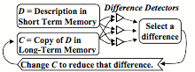
A “Mental Animal Trainer”
So this ‘animal-trainer’ theory suggests that when a person learns something new, they do need multiple repetitions. However, we are rarely aware of this, perhaps because that process goes on in parts of the brain that our reflective thinking cannot perceive.
Student: Why can’t we simply remember D by making that short-term memory more permanent—in the same place where it now is stored? Why should we have to copy it to some other, different place?
We are all familiar with the fact that our short-term memories are limited. For example, most persons can repeat a list of five or six items, but when there are ten or more items, then we reach for a writing pad. I suspect that this is because each of our fast-access ‘memory boxes’ is based on such a substantial amount of machinery that each brain includes only a few of them—and so, we cannot afford to use them up. This would answer the question our student asked: each time we made those connections more permanent we would lose a valuable short-term memory box!
This could account for the well-known fact that whatever we learn is first stored temporarily—and then it may take an hour or more to convert it into a more permanent form. For example, this would explain why a blow to the head can cause one to lose all memory of what happened before that accident. Indeed, that ‘transfer to long-term memory’ process sometimes can take a whole day or more, and often requires substantial intervals of sleep. [14]
What could be the different between our short- and long-term memory systems? One answer to that appears to be our short-term memory systems use certain short-lived chemicals, so that those memories will quickly fade unless unless those chemicals keep being refreshed; in contrast, we have good evidence that long-term memories depend on the production of longer-lived proteins that make more permanent connections between the cells of the brain.[15]
It probably is no coincidence that modern computers evolved in a somewhat similar pattern: at every stage of development, fast-acting memory boxes were much more costly than slower ones. Consequently, computer designers invented ways to confine those expensive but fast-acting units into devices called ‘caches’ that only store data that is likely soon to be needed again. Today, a modern computer has several such caches that work at various different speeds, and the faster each is, the smaller it is. It may be the same inside our brains.
Here are a few other reasons why our memory systems may have evolved to require so much time and processing.
Retrieval: When one makes a memory record, it would make no sense to store this away without providing some ways to retrieve it. This means that each record must also be made with links that will activate it when relevant (for example, by linking each new memory to some other existing panalogy).
Credit Assignment: A record of how one solved a problem would be unlikely to have much future use if it applied only to that particular problem. We’ll discuss this more in §8-5.
The ‘Real-Estate’ problem for Long-term memories. How could an ‘animal-trainer’ find room in the brain for the copy that it is trying to make? How could it find appropriate networks of brain cells to use, without disrupting connections and records that one would not want to erase? So, finding places for new memories may involve complex constraints and requirements, and this could be a reason why making permanent records takes so much time.
Copying complex descriptions. It is easy to imagine ways to record a simple list of symbols or properties, but I have never seen any plausible schemes for how a brain could quickly make copies of structures with more complex connections. That is why this section proposed to use a sequential, difference engine-like scheme. [16]
∞∞∞∞∞∞∞∞∞∞∞∞∞∞∞∞∞∞∞
Suppose that you’ve just had a ‘good idea’ or solved a certain hard problem P. What, then, should you learn from this experience? One thing you could do is to construct a new rule: If the problem you’re facing is like problem P, Then try the solution that worked on P. That solution will probably help you with problems that closely resemble P—but it is unlikely to help with less similar problems.
However, instead of just recording your solution to P, you could make a record of the Way To Think that used were using when you found that solution! Generally, one would expect this to help with a much wider range of other problems. But how you could make copy of anything like your entire state of mind? Clearly, that would never be practical—but you might get a good approximation to it if you could, later, re-activate a substantial portion of the resources that were active when you solved problem P.
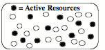
This suggests that to remember the method you used to find the solution to P, you could simply construct a new Selector that activates that set of resources. We call this kind of structure a “K-line,”
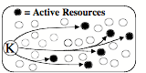
One can see such a K-line as a sort of ‘snapshot’ of a mental state because, when you later activate it, that will put you into a similar state, which should help to solve other problems like P. Here is an analogy that illustrates how K-lines work:
Kenneth Haase: “You want to repair a bicycle. Before you start, smear your hands with red paint. Then every tool you need to use will end up with red marks on it. When you’re done, just remember that ‘red’ means ‘good for fixing bicycles.’ If you use different colors for different jobs, some tools will end up marked with several colors. […] Later, when you have some job to do, just activate the set of tools with the right color for that kind of job, and the resources that you’ve used for such jobs then become available.” [See SoM 8.1]
This way, for each kind of problem or job, your K-lines can fill your mind with ideas that might be relevant—by getting you into a mental state that resembles one that, in the past, helped with a similar job.
Student: How could this help you do anything new, if it only re-uses a way to think that you already knew how to use—when you used it to solve that old problem?
Whenever you work on a novel problem, you may start up several K-lines at once, and this is likely to activate some resources that conflict with one another. Then, this will lead to a cascade in which some resources will get suppressed and some other resources will be aroused—and now you’ll be using a somewhat new set of resources, and your state of mind won’t be quite the same as any that you have been in before. Thus, every new situation is likely to lead to a somewhat novel Way to Think—and if you make a ‘snapshot’ of that, you will now have a K-line that differs from all of your previous ones. [17]
Student: I see how this new K-line could be used as a Selector for a new Way to Think. But how would you build a new Critic to recognize when to activate it?
If we want to use that new K-line for problems like P, then a simple such Critic would recognize some combination of features of P.
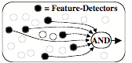
However, such a Critic will rarely be useful if it requires all the features of P, because then it will not recognize situations that are slightly different that P. Also, each new K-line should include only resources that actually helped.
Student: I see what you mean. Suppose that when you were fixing that bicycle, at some point you tried to use a tool that happened to make the problem worse. It wouldn't be good to paint that tool red because, then, later you would waste more time again.
This suggests that when we make new Selectors and Critics—or more generally, whenever we learn—we should try to make sure that what we learn will mainly consist of things that are likely to help. The following section discusses some processes that might help to ensure that what we learn will be relevant in future times.
∞∞∞∞∞∞∞∞∞∞∞∞∞∞∞∞∞∞∞
When first we met Carol in chapter §2, she learned to use spoons for moving fluids. But then we asked about which aspects of her several attempts should get credit for her final success:
Should her learning include which shoes she wore, or the place in which those events occurred, or whether the weather was cloudy or clear? Which of the thoughts she was thinking then should be recorded in what she remembers? What if she smiled while using that fork, but happened to frown when using that spoon? What keeps her from learning irrelevant rules like, “To fill a cup, it helps to frown”?[18]
Some early ideas about how animals learn were based on schemes in which each reward for a success will cause a small “reinforcement” of some connections in the animal’s brain—while every disappointment will cause a corresponding weakening. In simple cases, this can lead a brain to select the right features to recognize. [See §§§Reinforcement] However, in more complex situations, such methods will not work so well to find which features are relevant—and then we’ll need to think more reflectively.
Some other theories about how learning works assumed that this consisted of making and storing new If-Do reaction-rules. This could be one reason why Jack’s dog in §8‑4 needed so many repetitions: perhaps, each time that dog attempted that trick, it made a small change some If or some Do—but then, it only recorded that change in the case that it got a reward.
That might work well in a simple case. However, in more complex situations, this kind of learning is likely to fail if the If of any new If-Do rule turns out to describe too few details (because then that rule will be applied too recklessly)—or if that If includes too many details (because then it may never apply again, because no two situation are ever exactly the same.) The same applies to the Do of that rule—and so, each If and Do must be just abstract enough to make it apply to ‘similar’ situations—but not to too many dissimilar ones. Otherwise, Jack’s dog might need a new rule for every posture that it might be in. All this means that those old ‘reinforcement’ schemes might work well enough for some animals, but it seems unlikely they could be help much to explain how humans learn more complicated things.
This brings us back to that question about how a person can learn so quickly, without doing so many repetitions. Earlier we suggested that we actually do many repetitions, but that these go on inside our minds, and cannot be seen by a person outside. But here we’ll take another view in which we use higher-level processes to decide what to learn from each incident—because, to understand what you have done, you need to reflect on your recent thoughts. Here are a few of the processes that these ‘credit-assignments’ might involve. [19]
Choosing how to represent a situation will affect which future ones will seem similar.
Unless you select only the parts of your thinking that helped, you may learn too many irrelevant things.
It helps to do mental experiments to discover which features were relevant, by varying some of their elements.
Each new fragment of knowledge or skill must be connected so that you can access it when it is relevant.
The better those decisions are made, the more you will benefit from each experience. Indeed, the quality of those processes could be important aspects of the suitcase of traits that people call “intelligence.” However, merely recording solutions to problems will help us only to solve somewhat similar problems, whereas if we can record how we found those solutions, that could further enable us to deal with much broader classes of situations.
For example, in playing a game like checkers or chess, if you should happen to win a game, you won’t gain much by simply recording the moves that you made— because you’re unlikely ever again to encounter those same situations. However, you can do better if you can learn which of your higher-level decisions helped to reach those winning positions. For, as Allen Newell observed fifty years ago,
Allen Newell: "It is extremely doubtful whether there is enough information in "win, lose or draw," when referred to the whole play of the game [so, for learning to be effective], each play of the game must yield much more information. … If a goal is achieved its subgoals are reinforced: if not they are inhibited. … Every tactic that is created provides information about the success or failure of tactic search rules; every opponent's action provides information about success or failure of likelihood inferences and so on.”[20]
Thus, when you finally achieve a goal, you should assign some credit for this to the higher-level method you used to divide that goal into subgoals. Instead of just storing solutions to problems, you thus can refine the strategies you used to discover those solutions.
Student: But then you’d also want to remember the strategies that led to those methods—and you’ve started a process that never will end!
There is no clear limit to how long one could dwell on what might have led to a certain success. Indeed, such realizations are sometimes delayed for minutes, hours or even days; this suggests that some of our credit-assignments involve extensive searches that go on in other parts of our minds.
For example, we sometimes have ‘revelations’ like, “Now I see the solution to this,” or “I suddenly see just why that worked!” But as we saw in §7-7, we cannot assume that those problems were solved during those wonderful moments of time, because of being unaware of the unconscious work that preceded them. If so, then such a moment may merely celebrate the times at which some Critic has said, “This has taken so long that it’s time to stop— and to adopt the tactic already considered which, at this moment would seem the best.” [21]
We usually make our Credit Assignments without much reflection, but sometimes one may say to oneself, after completing some difficult job, “It was stupid of me to waste all that time, when I knew how to do it all along.” To keep from making that error again, we need to modify our way to retrieve that particular fragment of knowledge—or perhaps make some change in some Critic that failed to remind us of it.
Similarly, one sometimes may ask, “How did I manage to solve that hard problem?” or “What were the critical steps in that process? Of course, we cannot always find answer to those, because it may be harder to understand how one found the solution than it was to solve the problem. Nevertheless, such questions suggest that our credit-assignments sometimes depend on high-level reflections.
In any case, if we want to understand how people learn, we will need more research on such questions as what kinds of credit assignments infants can make, how children develop better techniques, how long such processes persist, and the extent to which we can learn to control them. In chapter §9 we will also discuss how our feelings of pleasure might relate to how we make our credit-assignments.
∞∞∞∞∞∞∞∞∞∞∞∞∞∞∞∞∞∞∞
Transfer of Learning to other realms. Every teacher knows the frustration that comes when a child learns something to pass a test, yet never applies that skill to anything else. What makes certain children excel at "transferring” the things they learn to other, different realms—whereas other children seem to need to relearn the same ideas in each domain?
It would be easy just to say that some children are ‘more intelligent’—but that would not help us to explain how they use their experiences to make more helpful generalizations. This could partly be because they are better at making and using panalogies. But also, as we have just seen, the better our ways to describe each event, the more we can learn from each incident. Indeed, those ‘smarter’ children may have come to learn more efficiently because they have learned to reflect (perhaps unconsciously) about how their own learning processes work—and then found ways to improve those processes. For example, such reflections may lead to better ideas about which aspects of things they ought to learn.
It seems clear that the qualities of our thoughts must depend, to a large extent, on how well we make our credit-assignments. For those must be among the processes we use to make our most significant generalizations. This means that persons who do not learn to make good credit-assignments would be likely to show deficiencies in their ability to apply what they learn to new situations. This is what psychologists call ‘Transfer of Learning’ [22]
This section has argued that, to gain more from each experience, it would not be wise for us to remember many details of each situation—but only those aspects that were relevant to our goals. Furthermore, what we learn can be yet more profound, if we assign the credit for our success, not only to the final act that led to our failure or success —or even to the strategy that led to it—but to whatever earlier choices we made that selected our winning strategy. Perhaps our unique abilities to make such high-level credit-assignments accounts for many of the ways in which we surpass our animal relatives.
∞∞∞∞∞∞∞∞∞∞∞∞∞∞∞∞∞∞∞
The best way to have a good idea is to have lots of ideas. —Linus Pauling
We admire our Einsteins, Shakespeares, and Beethovens—and many people insist that their accomplishments are inspired by "gifts" that no one could ever explain. If so, then machines could never do such things because (at least, in the popular view) no machine could hold any mysteries.
However, when one has the fortune to meet one of those persons that we portray as “great,” one finds no single, unusual trait that seems to account for their excellence. Instead (at least it seems to me) what we find are unusual combinations of otherwise common ingredients.[23]
They are highly proficient in their fields.
(But by itself we just call this expertise.)
They have more than usual self-confidence.
(Hence better withstand the scorn of peers.)
They often persist where others would quit.
(But others may just call this stubbornness.)
They
accumulate more ways to
think.
(But then they’ll need better ways to switch.)
They habitually think in novel
ways
(But so do others, albeit less frequently.)
They often reflect on their goals and ideals.
(Or are less reluctant to modify them.)
They have better systems for self-control.
(So they waste less time on irrelevant goals.)
They reject many popular myths and beliefs.
(Especially about what cannot be achieved.)
They tend to keep thinking more of the time.
(They spend less effort at wasting their minds.)
They excel at explaining what they've done.
(So their work is less likely to fade from neglect.)
They tend to make better credit-assignments.
(So they learn more from less experience.)
Everyone has some share of each such trait, but few develop so many of them to such unusually great extents.
Citizen: Each of those traits might help to explain how regular people solve everyday problems. But surely there be something unique about such great thinkers as Feynman, Freud, and Asimov.
Here is a statistical argument against the belief that genius comes from singular gifts or characteristics:
Suppose that there were, say, 20 traits that might help to make someone exceptional, and assume that each person has an even chance to excel at each particular one. Then we’d expect only one in each million persons to excel at all of those 20 traits.
But statistics alone never tell us the reasons! For even if that argument were correct, it would shed no light at all upon either the nature of those variations or why just those particular people develop so many of those traits. For example, perhaps to acquire so many such qualities, a person must first develop some unusually good ways to learn. In any case, there is plenty of solid evidence that, to a significant extent, many of our mental traits are genetically inherited. However, I suspect that yet more important are the effects of fortunate mental accidents.
For example, most children discover various ways to arrange their toy blocks into columns and rows—and if observers praise what they’ve done, those children may go on to refine those new skills. Then, some of those children may also go on to play at discovering new ways to think. However, no outside observer can see those mental events, so those children will have to learn by praising successes inside their own minds. This means that when such a child does remarkable things, outsiders may see no clear cause for this—and will tend to describe that child’s new skills with terms like talents, endowments, traits, or gifts.
The psychologist Harold McCurdy suggested another ‘fortunate accident’ that could bring out exceptional traits in a child—namely to have been born with exceptional parents.
Harold G. McCurdy: "The present survey of biographical information on a sample of twenty men of genius suggests that the typical development pattern includes these important aspects: (1) a high degree of attention focused upon the child by parents and other adults, expressed in intensive educational measures and usually, abundant love; (2) isolation from other children, especially outside the family; (3) a rich efflorescence of fantasy [i.e. creativity] as a reaction to the preceding conditions.” [24]
It would also appear that outstanding thinkers must have developed some effective techniques that help them to organize and apply what they learn. If so, then perhaps those skills of ‘mental management’ should get some credit for what we perceive as the products of genius. Perhaps, once we understand such things, we’ll be less concerned with teaching particular skills and more teaching children how to develop those more generally powerful mental techniques.
Citizen: But can we really hope to understand such things? It still seems to me that there is something magical about the ways in which some people imagine completely new ideas and creations.
Many phenomena seem magical until we find out what causes them. In this case, we still know so little about how our everyday thinking works, that it would premature to assume that there is a real difference between "conventional" and "creative" thought. Then why would we cling to the popular myth that our heroes must have inexplicable ‘gifts’? Perhaps we’re attracted to that idea because, if those achievers were born with all their wonderful tricks, we would share no blame for our deficiencies—nor would those artist and thinkers deserve any credit for their accomplishments.
However, let’s turn this discussion upside down, and change our question to ask instead, what could cause one person to become less resourceful than another one. Here is one condition that could have the effect of hindering further mental growth:
The Investment Principle: If you know of two ways to achieve some goal, you’ll usually start with the one you know best—and then that method may gain so much additional strength that you’ll tend to use the second one less—even if others have told you that that the second is the better one.
Thus, sometimes the problem is simply that for one to develop a new way to think, one may have to endure the discomfort of many awkward or painful performances. So, one ‘secret of creativity’ may be to develop the knack of enjoying that sort of unpleasantness! We’ll explore this more in chapter §9, when we talk about Adventurousness.
∞∞∞∞∞∞∞∞∞∞∞∞∞∞∞∞∞∞∞
“There is no property absolutely essential to one thing. The same property, which figures as the essence of a thing on one occasion, becomes a very inessential feature upon another.” — William James [Principles, Chap. XXII.]
Everyone can imagine things; we hear words and phrases inside our minds. We envision conditions that don’t yet exist—and then exploit those images to predict the effects of possible actions. Much of our human resourcefulness must come from our abilities to manipulate mental models and representations of objects, events, and other conceptions.
But what do we mean by a model or a representation? As I suggested in §4-5, I am using those words to talk about any structure inside one’s brain that one can use to answer some questions about some subject. Of course, those answers will only be useful when your ‘model’ or ‘representation’ behaves enough like the model’s subject does—for the purposes that concern you now.
We sometimes use actual physical objects to represent things, as when we use a picture or map to help us find paths between parts of a city. However, to answer a question about a past event, we must use what we call our “memories.”
But what do we mean by a memory? Each memory must be some kind of record or trace that you made at the time of that prior event—and, of course, you cannot record an event itself. Instead, your brain can only make some records about some of the objects, ideas, and relationships that were involved in that incident. (Indeed, you cannot record an idea itself—and so the best that you can do is to record some aspects of your mental state.)
For example, when you hear a statement like, "Charles gave Joan the book," you might represent that incident with a script-like sequence of If-Do-Then rules:
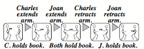
However, you also may have wondered about whether that book was a gift or a loan, or did Charles want to ingratiate Joan, or was merely disposed to help a friend. You might have envisioned how the actors were dressed, or some of the words they might have said. Then you might have made several representations for that incident, perhaps including:
A verbal description of that incident.
A visual simulus of the scene.
Some models of the persons involved.
Simulations of how those persons felt.
Analogies with similar incidents.
Predictions about what might happen next.
Why would your brain represent the same event in so many different ways? Perhaps each realm of thought that was engaged left an additional record or trace in some different network inside your brain. This will enable you, later, to use multiple ways to think about that same incident—for example, by using verbal reasoning, or by manipulating mental diagrams, or by envisioning the actors ‘gestures and facial expressions.
Today, we still know little about how our brains make those memory traces or how they later retrieve and ‘replay’ them. We do know a lot about how separate brain-cells behave, but we do not yet have good explanations of about how our larger-scale columns and networks of cells manage to represent past events. Nor do our self-reflections help; although as we saw in §8-4, this must involves complex processes, nevertheless it seems to us that we simply ‘remember’ what happens to us.
In any case, one cannot record an event itself, but one can only make some descriptions of how that event affected one’s mental state. Some earlier sections of this book discussed some structures that could used to represent such information. The following section will review some of these, and then speculate about how such structures might be arranged in our brains.
∞∞∞∞∞∞∞∞∞∞∞∞∞∞∞∞∞∞∞
This section reviews some structures that researchers have used to represent knowledge inside computers. I will have to leave out most smaller details (many of which are discussed in chapter 8, 19, and 24 of The Society of Mind). Some non-technical readers might do well to skip this section.
Narrative Scripts: Perhaps our most familiar way to represent an incident is to recount it a story or script that depicts a sequence of events in time—that is, in the from of a story or a narrative. The previous section described such a script for the sentence, "Charles gave Joan the book," and we saw a similar one in §5-3 for Carol’s plan about how to build an arch:
A sequence-script of If-Do-Then Rules
Semantic Networks: However, when we need to describe more details, such as the relations between an object’s parts, it may be better to use the kinds of ‘semantic networks’ we saw in §4-6 to represent a person’s self-model, and in §5-8 to represent the structure of a physical book.
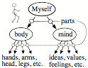 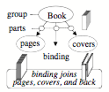
Semantic Networks for ‘Person’ and ‘Book’
Trans-Frames: To represent the effects of an action, it is convenient to use pair of semantic networks to represent what was changed. This is what we did in §5-8 to imagine replacing the top of an arch. This way, one only needs to change the name of a single relationship—instead of altering thousands of points to change a visual picture-like image.
A Trans-Frame for changing the top of an arch
We use the term “Trans-Frame” to name such a pair that represents the conditions before and after some action was done. Then we also can represent the effect of a sequence of actions by linking together a chain of the Trans-Frames to form a story or narrative. Here is a sequence of trans-frames for giving a book:
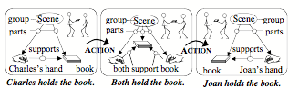
Such a sequences can describe a script that includes any further details that one might need.
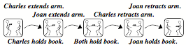
A Script for transferring a Book
Each of these types of representation can answer certain types of questions—but what could enable computers to produce answers so quickly as human brains do? When someone says ‘apple,’ you seem to almost instantly know that a typical apple grows on a tree, is round and red, is about the size of a human hand, and has a certain texture, flavor and taste—yet almost no time seems to elapse between hearing that word and then becoming aware of such things.
To explain how that information could so quickly appear, I conjecture that much of such knowledge is wrapped into structures called Frames. The simplest type of Frame consists of nothing more than a labeled list of some properties of particular object, and you can think of this kind of list as like a printed form that has ‘blanks’ or ‘slots’—each of which can be filled-in with a link to some fragment of knowledge. Then, when you know which slot to inspect, you can quickly retrieve that fragment of knowledge, without need much time to search for it.
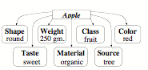
A Frame for an Apple’s Properties
Default Assumptions: A valuable feature of a typical frame is that every slot comes already filled in with some ‘default’ or typical value for it. Then you can use such a value to make a good guess whenever you don’t have a more definite answer. For example, you might assume ‘by default’ that an apple is red—but if your particular apple is green, then you will replace ‘red’ by ‘green’ in its color slot. In other words, a typical frame describes a stereotype whose ‘default assumptions’ are usually right—but which we can easily change or replace when we encounter exceptions to them. [25] This would seem to be an important aspect of how we do commonsense reasoning.
Picture-Frames: Every slot of a property list is directly connected to the name of that frame, as in the list above for describing an Apple. However, other more complex kinds of frames may have more connections between their various slots. For example, to represent some view of a room, we could use what we call a “picture frame” to represent each wall of that room by in terms of a few large spatial regions as shown below. Then each such region can have some links that describe the objects close to that part of the wall, as well as some links to other nearby regions. This kind of structure would allow us to do a good deal of commonsense spatial reasoning. [See §§24 of SoM.]
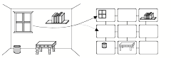
Frames for Including Additional Slots: It makes sense to allow each Frame to include some additional slots for representing knowledge that is not already described by the networks contained inside that frame. For example, here is a Trans-frame for Joan’s trip to New York:
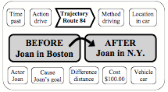
This frame includes two semantic networks that describe the situations Before and After that trip was taken. However, it also contains other slots that describe when, how and why Joan took that trip. Then the default assumptions included in those slots can supply additional knowledge for answering such questions as these.
Where did that action occur and when? Who or what
caused it to happen?
Was it intentional or not? What purposes was it intended to serve?
What devices or tools were used? What were its
other side effects?
Which resources did it engage? What was expected to happen next?
This suggests an explanation of how we quickly use our commonsense knowledge—without any sense that we’re doing it: it is an example of the “Immanence Illusion’ that we described in §4-3.1. As soon as you activate such a frame, then many questions that you might otherwise ask will already be answered before you can ask them—because they are among the default values of that frame’s slots. For example, if you heard that Charles was holding a book, you would not stop to ask why he was holding it; you would simply assume that he has the most usual goal for which any person holds anything—namely, to keep it from falling to the floor.[26]
Connectionist and Statistical Representations.
Student: This book suggests some ideas about how high-level knowledge-based systems could come to achieve things like human commonsense reasoning. But why were no such systems built in the past?
Work on such systems almost came to a stop in the 1980’s because most researchers recognized that that this would need ways to acquire and to organize millions of fragments of commonsense knowledge. That prospect seemed so daunting that most researchers decided to search for simpler alternatives. This led to many attempts to design some single process that would somehow evolve whatever it needed—along with learning all the knowledge it would need by interacting with the external world. Some of these “baby machines” did learn to do some useful things (such as to recognize various kinds of patterns) but as we noted in Chapter §6, none of them went on to develop more higher-level reflective ways to think.
Why were none of those “Baby Machines” able to keep extending their abilities? It appears to me that this failure came mainly because most of their designers decided that their systems should represent the knowledge they were to acquire mainly in numerical terms. Consequently, most of those ‘baby machines’ were designed to use the techniques called Neural Networks, Perceptrons, Fuzzy Logic systems, and “Statistical Learning Programs." All such systems represent knowledge about the relations between things by assigning numerical ‘weights’ or ‘strengths’ to connections inside a network of nodes. Such a representation might look like this:
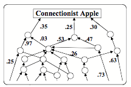
Here we see only one kind of link, which reduces every type of relationship to a single numerical value or ‘strength.’ The trouble with this is that a single numbers is ‘opaque’ in the sense that it has so little expressiveness. For, whenever one computes an average or a probability, this conceals the knowledge or evidence that led to it.[27] For, consider that if you only see the number 12, you cannot tell if that number represents 5 plus 7, or 9 plus 3, or 27 minus 15! Did it come from counting the eggs in a nest, or from counting the years of your grandchild’s age? For example, if you represent the concept of ‘apple’ this way, your machine may be able to recognize an apple, but it won’t be able to reason about it. In short, numerical representations become obstacles to using more reflective ways to think—because it is difficult for other, higher-level processes to think about the knowledge that such systems contain. [We’ll discuss this more in §§§Opacity.]
Let’s contrast this with representing a concept of “apple’ by using a semantic network like this:
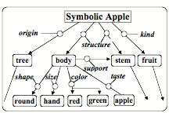
This kind of representation can help you answer many questions about an apple, such as where you can find one and what you can use it for—because a semantic network can express all sorts of different relationships, whereas numerical representations ultimately limit a system’s mental growth, because they provides no parts that the rest of a mind can use to produce more elaborate explanations.
Micronemes for Contextual Knowledge. We always face ambiguities. The significance the things that you see depends on the rest of your mental context. This also applies to events in your mind, because what they mean depends on which mental resources are active then. [28] In other words, no symbol or object has meaning by itself, because your interpretation of it will depend on the mental context you’re in. For example, when you hear or read the word block, you might possible think that it means an obstacle to progress, a certain kind of rectangular object, a wooden board to chop things on, or a stand on which things in an auction are shown. Then which interpretation will you select?
Such choices will depend, of course, on the preferences that are active in your current mental context—which, somehow, this will dispose you to make selections from such sets of alternatives as these:
Conceptual or material.
Animal, mineral, or vegetable.
Well-established or speculative.
Common, rare, or irreplaceable.
Robust, fragile or reparability.
Indoors or outdoors.
Public or private.
Residence, office, theater, or car.
Urban, rural, forest, farm.
Color, texture, hardness, strength.
Irregular or symmetrical
Hunting, gambling, entertainment.
Cooperation, conflict, etc.
Many contextual features like these have common names, but many others (such as aromas) have no such words. I have proposed to use the term “micronemes” for the myriad of nameless clues that color and shade how we think about things, and the diagram below suggests some machinery through which such contextual features could affect many mental processes. Imagine that the brain contains a bundle of thousands of wire-like fibers that pass through a great many of other structures inside that brain—so that the state of each of those ‘micronemes’ can influence many processes:
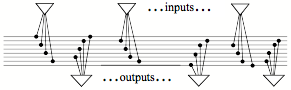
On the input side, we shall assume that many of your mental resources—such as K-lines, Frame-slots, or If-Do-Then rules— can alter the states of some micronemes. Then the present state of your micronemes could represent much of your current mental context—and the states of those fibers are changed, your far-reaching bundle of micronemes will broadcast that information to many other mental resources—so that this will change some of your attitudes, outlooks, and states of mind. In other words, this system could switch you into other, different ways to think. I think that this concept of micronemes could help to replace many old and vague ideas about ‘association of ideas.’ In §§Brain-Waves, we suggest more details about how such a system could play central roles in how our mental processes are organized.
The sections above have briefly described several kinds of structures that we could use to represent various types of knowledge. However, each of these representation types has its own virtues and deficiencies—so each of them may need some other connections through which they can exploit some of the other types of representations. This suggests that our brains need some larger-scale organization for interconnecting our multiple ways to represent knowledge. Perhaps the simplest such arrangement would be a hierarchical one like this:
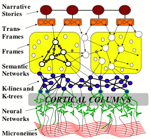
This diagram suggests how a brain might organize its ways to represent knowledge. However, we should not expect to find that actual brains are arranged in such an orderly way. Instead, we should not be surprised if anatomists find that different regions of the brain evolved somewhat different such organizations to support mental functions in different realms—such as for maintaining our bodily functions, manipulating physical objects, developing social relationships, and for reflective and linguistic processes.
This hierarchy of representation appear to roughly correspond to the various levels of thinking that were proposed in our previous chapters—in the sense that increasingly higher levels will tend to more depend on using story- and script-like representations. However, each of those levels itself may use several types of representations. In any case, even if this diagram turns out to be a good description of the relations between those representations, it is unlikely to closely match the gross anatomy of the brain—because the structures shown in this diagram need be spatially close to each other. Indeed, a substantial volume of a human brain consists of bundles of nerves that interconnect regions that are quite far apart. [29]
From where do we obtain our ways to represent knowledge, and why do we find it so easy to arrange our knowledge into panalogies? Are these abilities installed genetically into our infant ofmemory systems, or do we learn them individually from our experiences? These questions suggest a more basic one: how do we manage to learn at all? As Immanuel Kant pointed out long ago, learning to learn is one of the things that we cannot learn from experience!
Immanuel Kant: “That all our knowledge begins with experience there can be no doubt. For how is it possible that the faculty of cognition should be awakened into exercise otherwise than by means of objects which affect our senses, and partly of themselves produce representations, partly rouse our powers of understanding into activity, to compare, to connect, or to separate these—and so to convert the raw material of our sensations into a knowledge of objects?”
“But, though all our knowledge begins with experience, it by no means follows that all arises out of experience. For, on the contrary, it is quite possible that our empirical knowledge is a combination of that which we receive through impressions, and [additional knowledge] altogether independent of experience … which the faculty of cognition supplies from itself, sensory impressions giving merely the occasion. [30]
So, although sensations give us occasions to learn, this cannot be what makes us able to learn, because we first must have the ‘additional knowledge’ that our brains would need, as Kant has said, to “produce representations” and then “to connect” them.[31] Such additional knowledge would also include inborn ways to recognize correlations and other relationships among sensations. I suspect that, in the case of physical objects, our brains are already innately endowed with machinery to help us “to compare, to connect, or to separate” objects so that we can represent them as existing in space.
All this leads me to suspect that we must be born with primitive forms of structures like K-lines, Frames, and Semantic Networks—so that that no infant needs to wholly invent the kinds of representations that we depicted above. However, I doubt that we’re born with those stuctures complete, so it still requires some effort and time for us to refine those primitive representations into their more adult forms. I hope that soon there will be some research on how that development process works..
Could any person ever invent an totally new kind of representation? Such an event must be quite rare because no type of representation would be useful without some effective skills for working with it— and a new set of such skills would take time to grow. Also, no fragment of knowledge could be of much use unless it is represented in a familiar way. For reasons like these, it makes sense to conjecture that most of our adult representations come either from refining our primitive ones, or by acquiring them from our culture. However, once a person has learned to use several different representations, then that person might be more able to invent new ones. Indeed, we see such skills in the work of those exceptional writers, artists, inventors, and scientist who repeatedly discover new and useful ways to represent things.
How should a brain proceed to select which representation to use? As we have emphasized several times, each particular kind of description has virtues and deficiencies. Therefore it makes more sense to ask, "Which methods might work well for the problem I’m facing—and which representations are likely to work well with those methods?"
Most computer programs still, today, can do only one particular kind of task, whereas our brains accumulate multiple ways to deal with each type of problem we face. However, once we better understand how to organize such resources, , along with knowledge to help us decide which technique to use in each situation. To do this we need to develop a wide range of ways to represent those all those capabilities—so that, whenever the method we’re using fails, we can switch to another alternative.[32]
∞∞∞∞∞∞∞∞∞∞∞∞∞∞∞∞∞∞∞
[1] “Et le second est que, bien qu'elles fissent plusieurs choses aussi bien, ou peut-être mieux qu'aucun de nous, elles manqueraient infailliblement en quelques autres, par lesquelles on découvrirait qu'elles n'agiraient pas par connaissance, mais seulement par la disposition de leurs organes. Car, au lieu que la raison est un instrument universel, qui peut servir en toutes sortes de rencontres, ces organes ont besoin de quelque particulière disposition pour chaque action particulière; d'où vient qu'il est moralement impossible qu'il y en ait assez de divers en une machine pour la faire agir en toutes les occurrences de la vie, de même façon que notre raison nous fait agir.” Rene Descartes, in Discours de la méthode (1637)
[2] Chapter III of The Descent of Man
[3] Turing described these “universal” machines before any modern computers were built. For more details about how these work, see http://mathworld.wolfram.com/UniversalTuringMachine.html.
[4] This switching usually happens so quickly that we don’t notice it; this is a typical instance of the Immanence Illusion [See §4-3.1.]
[5] There is a detailed theory of how this works in §24.6 Direction-Nemes of The Society of Mind.
[6] It was recently discovered only recently that people often do not perceive some very large changes in a scene. See [give reference] for astonishing demonstrations of this.
[7] From http://web.media.mit.edu/~minsky/papers/Frames/frames.html
[8] See Chapter 3 of William Calvin, How Brains Think, Basic Books, 1966.
[9] For more details about the relations among different nearby things, see chapter 24 of SoM, which also tries to explain why the shapes of things don’t seem to change when we look at them from different directions—as well as why things don’t seem to change their locations when you move your eyes.
[10] I wonder if Hume had some such idea when he said: “All belief of matter of fact or real existence is derived merely from some object, present to the memory or senses, and a customary conjunction between that and some other object. … [This results from] a species of natural instincts, which no reasoning or process of the thought and understanding is able either to produce or to prevent.”—David Hume, An Enquiry Concerning Human Understanding, 1748.
[11] David Hume, ibid. Part II.
[12] Hume was especially concerned with this question of how evidence can lead to conclusions: “It is only after a long course of uniform experiments in any kind, that we attain a firm reliance and security with regard to a particular event. Now where is that process of reasoning which, from one instance, draws a conclusion, so different from that which it infers from a hundred instances that are nowise different from that single one? I cannot find, I cannot imagine any such reasoning.”
[13] Note that this is a difference-engine ‘in reverse,’ because it changes the internal description, instead of changing the actual situation. See “Verbal expression” in SoM §22.10).
[14] Robert Stickgold et al., Cognitive Neuroscience (Vol. 12, No. 2) in March 2000, also Nature Neuroscience (Vol. 3, No. 12) in December 2000.
[15] Another answer might be that some information is stored ‘dynamically’—for example by being repeatedly echoed between two or more different clusters of brain cells.
[16] I described a similar system for verbal communication in §22.10 of SoM.
[17] The K-line idea was first developed in [Ref: Plain Talk] and [Ref: K-lines]. Chapter 8 of SoM describes more ideas about what might happen when K-lines conflict.
[18] Perhaps she used that facial expression to help her maintain her concentration. If this became part of her subsequent skill, it could later be hard to eliminate.
[19] In the field of Artificial Intelligence, the importance of credit-assignment was first recognized in Arthur Samuel’s research on machine learning. [Ref.]
[20] A. Newell, "The chess machine," in Proc. Western Joint Computer Conf. March 1955.
[21] People often describe such moments as the times at which they make their decisions—and then regard these as ‘acts of free will.” However, one might instead regard those moments as merely the times at which one’s ‘deciding’ comes to a stop.
[22] Presumably, these capacities also may vary among
different parts of the same mind.
[23] Some of this section is adapted from §7.10 of SoM.
[24] Harold G. McCurdy, The Childhood Pattern of Genius. Horizon Magazine, May 1960, pp. 32-38. McCurdy concluded that mass education in public schools has "the effect of reducing all three of the above factors to minimum values."
[25] Where do we get those default assumptions? Answer: we usually make a new frame by making changes in some older one, and values that were not changed at that time will be inherited from those older ones.
[26] I should add that a frame can include some additional slots that activate other processes or sets of resources. This way, a frame could transiently activate ways to think—so that one almost instantly knows how to deal with some familiar object or situation.
[27] I should add that numerical representations have many useful applications. However, even when those numbers have some practical use, one can only alter them by increasing or decreasing them, but cannot add other nuances. It is much the same ‘logical’ systems; each ‘proposition’ must be true or false, so the system still uses something like numbers, except that their values can only be 0 or 1. Also, see see SOM, section 5.3.
[28] §§20.1 of SoM argues that even our thoughts can be ambiguous.
[29] Also, several such functions could be superimposed in the very same spatial regions, by using by genetically distinct lines of cells that interact mainly among themselves.
[30]Immanuel Kant, Introduction to Critique Of Pure Reason, Second edition, April 1787
[31] Later Kant claims that our minds must start with some rules like “Every change must have a cause.” Today, one might interpret this as suggesting that we’re born with frames that are equipped with slots that we tend to link to the causes of changes. In the simplest case, of course, that need could be satisfied by a link to whatever preceded the change that occurred; in later years we could learn to refine those links.
[32] There is more discussion of this in web.media.mit.edu/~minsky/papers/SymbolicVs.Connectionist.html.